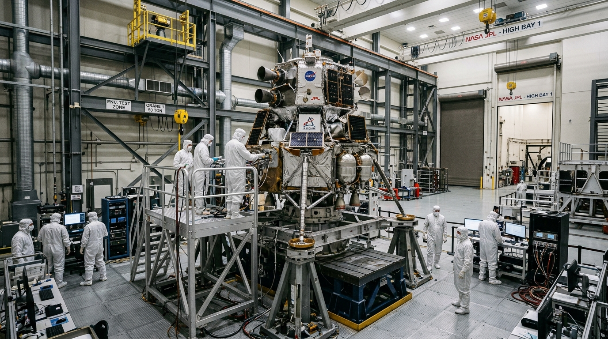

NASA JPL Testing Readies Voyager Technologies Lander for Moon Mission
Engineers and technicians at NASA's Jet Propulsion Laboratory are running vibration and thermal-vacuum qualification tests on the Voyager Technologies lunar lander.
Read the Story ➜